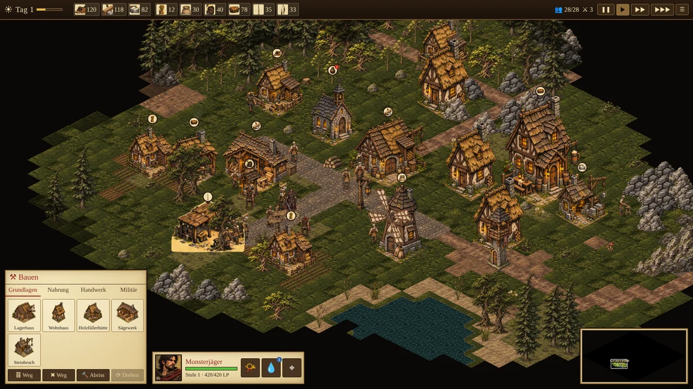
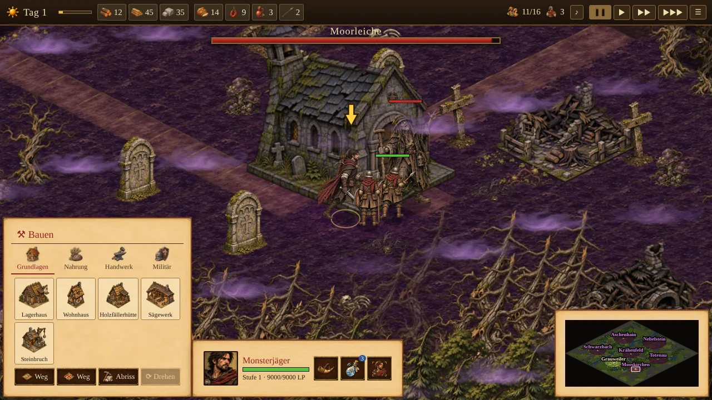
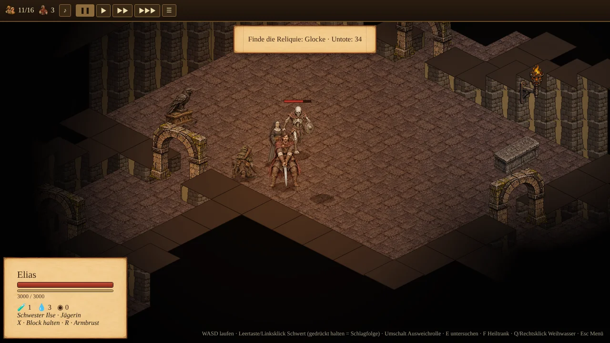
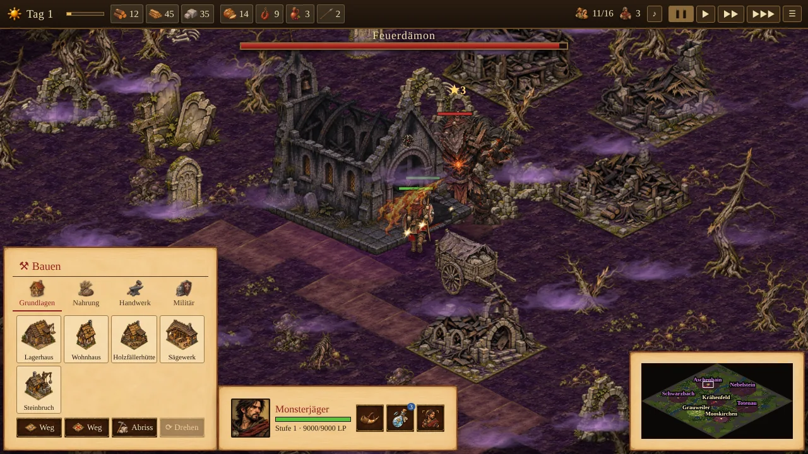
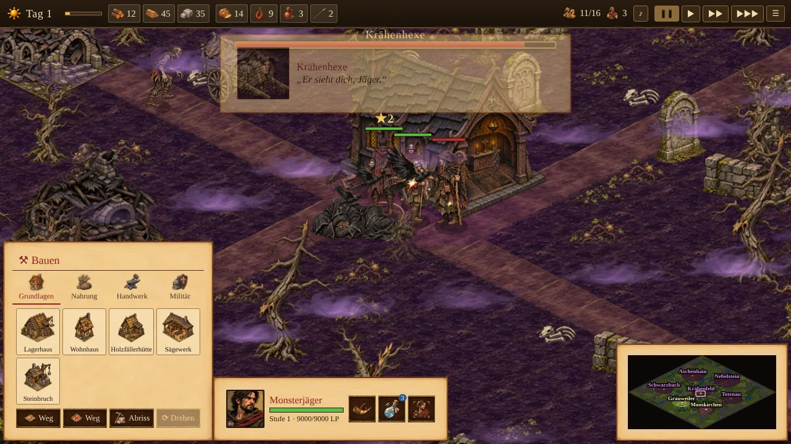
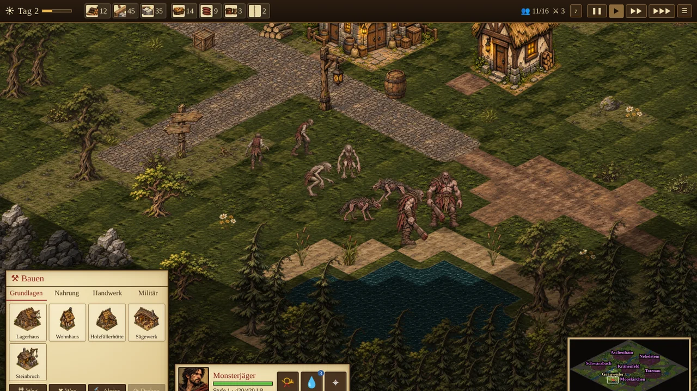

Spiel · Serie, Teil I · Demo spielbar
Monsterjäger I – Der Ursprung
Aufbau, Strategie und Gruftkämpfe im Comic-Stil, mit der Musik von Deep Structure. Die Demo läuft direkt im Browser.
Die Geschichte
Eine Seuche sucht das Land heim: Die Toten stehen wieder auf, und jede Nacht läutet in Nebelstein die Totenglocke. Elias, ein Jäger aus Grauweiler, wird gebissen und überlebt als Einziger.
Der Ursprung erzählt, wie Elias zum Monsterjäger wurde und woher sein Fluch stammt. Severin, der Hirte der Toten, und der Orden vom Schwarzen Siegel bleiben ihm auf den Fersen.
So spielt sich Monsterjäger
- Tagsüber aufbauen: Du baust das Dorf wieder auf und verbindest Holzfäller, Mühle, Bäckerei und Schmiede zu Warenketten.
- Nachts überleben: Wenn sich die Dornenhecken öffnen, hältst du mit deiner Miliz stand.
- Seuchennester ausräuchern: Du ziehst gegen die Nachbardörfer. Fällt das letzte Nest, erhebt sich vor der entweihten Kirche ihr Hüter: Moorleiche, Flussgeist, Krähenhexe, Knochenfürst und Feuerdämon.
- Gruftkämpfe: Unter jeder Kirche wartet eine Gruft. Dort kämpfst du direkt, mit Schwester Ilse, Bruno oder der Jägerin an deiner Seite, und findest Reliquien und die Briefe Severins.
- Musik als Uhr: Ein Spieltag dauert genau so lange wie seine sechs Stücke von Deep Structure.
Am besten am Computer mit Maus, Tastatur und Ton spielen.
Bilder aus dem Spiel






Die Monsterjäger-Serie
Vier Spiele erzählen Elias' Geschichte, jedes mit eigenem Schwerpunkt und eigener Musik:
- Teil I – Der Ursprung: Aufbau und Überleben (Demo spielbar)
- Teil II – Der Verfluchte: Aufbau und Tower Defense (in Planung)
- Teil III – Das Vermächtnis: Aufbau und Assassinen-Missionen (in Planung)
- Teil IV – Die Erlösung: Hack and Slash (in Planung)